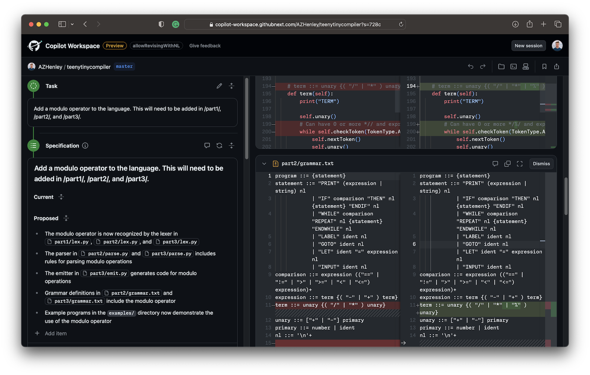
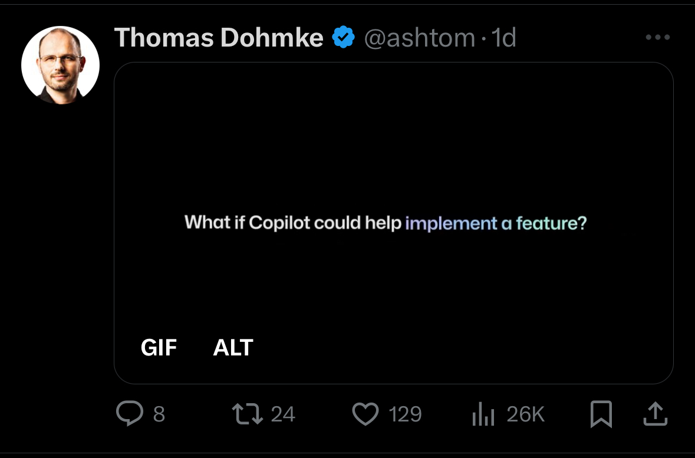

I work on AI + developer tools.
Today GitHub announced their new project: Copilot Workspace.
It is a task-oriented tool that lets you describe what you want to do within in a repository, and it will generate an editable plan of action, identify which files are relevant, and propose code changes to implement your requested changes.
I've been using it for a few days and want to share my thoughts.
Disclaimer: This project is very, very early stages and still evolving rapidly. My feedback will likely be outdated soon. I've worked previously with the GitHub Next team and I'm huge fans of them—they are brilliant.
TL;DR: Copilot Workspace is a great concept. But the UX and framing is entirely wrong and sets the wrong expectation for users. The current prototype is very slow (5+ minutes for one-line code changes) and the generated code is often buggy or has nothing to do with the specification. The generated plan is usually good. ChatGPT does a much better job in my head-to-head comparisons (assuming I already know exactly what code is relevant). I'm still optimistic of where it can go from here.
I don't want to spend much time talking about the performance or accuracy of the tool. It is powered by LLMs and it has all of the same consequences. That part will get better.
More importantly, what is the goal of Copilot Workspace?
That is what Copilot Workspace's user interface conveys to me. It turns my workflow into (1) tell it what I want and (2) do a code review of the result.
However, it doesn't come anywhere close to achieving this. It is very slow, the generated code was not good or was missing, it doesn't provide context, and there isn't a fast feedback loop to iterate. Worst of all, it skips all of the steps where I really dig into the code and build a mental model of how it works. There is value in that process beyond the resulting code.
And it is ok that Copilot Workspace falls short at independently completing tasks, because I don't think this should be the goal.
Sometimes I really need a pair programmer next to me. Not something to answer questions or write code, but to point out something on my screen and say "hey, go look into that!" or "don't forget about that other thing". I can see Copilot Workspace being valuable for discovering details that I don't know about (and don't know to ask) for a given task. Remember, people can be bad with words so there needs to be more proactive AI assistants.
However, using the tool feels like having tunnel vision and it sets the wrong expectations. It frames the process as a code review. If it is for exploring the space, it does so without providing any exploration features. I can't ask it follow up questions, I can't see multiple design options, and I can't use Copilot to quickly iterate on the code.
A lot of times, it can be hard to get started on a task. How great would it be for the AI to tell you here are the relevant files, here are some pitfalls to watch out for, and here are the subtasks you need to go do?
If this is the goal, it is again not achieving it. Currently Copilot Workspace feels like a very "heavy" one-and-done code generator that is difficult to iterate with. Instead, it could start as a conversation that builds up a task plan and list of relevant files incrementally. You should go back and forth between the code and the conversation. As you make changes or discover new information, it automatically updates the task plan.
If I had a personal programmer that sat next to me, how would I work with them? Would I give them a sticky note with the task and wait for them to come back with the code for me to verify?
Or would we ask each other clarifying questions, point out significant details, discuss design tradeoffs, and show incremental progress as we work?
I think that an iterative human-in-the-loop flow is not just the ideal UX for developer tools, but also necessary because of how inconsistent LLMs are. The last 4 out of 5 sessions I had with Copilot Workspace, it completely ignored the task specification, including trivial ones like to add a comment! I'd only use code from 2 out of 12 sessions, and those were very simple tasks. The plans it generates continue to overpromise and get my hopes up. It can't handle completing multi-step tasks in one pass and I will struggle anyway with reviewing complex changes in one pass.
This is fundamentally a human problem, even after you solve all the problems of LLMs.
So, how would I redesign Copilot Workspace?
Is Copilot Workspace an autonomous developer that can accomplish tasks on my behalf? No.
But it can be a promising leap forward in augmenting people during cognitively demanding tasks.